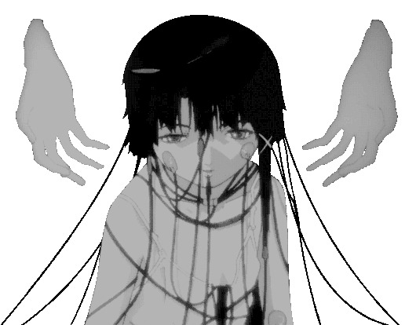

幻想郷は、予想以上に騒がしい日々をおくっていた。謎の来訪者に、夏の亡霊も戸惑ってるかの様に見えた。そんな全てが普通な夏。辺境は紅色の幻想に包まれた。ここは東の国の人里離れた山の中。博麗（はくれい）神社は、そんな辺境にあった。この山は、元々は人間は棲んでいない、今も多くは決して足を踏み入れない場所で、人々には幻想郷と呼ばれていた。
そして、ある夏の日、音も無く、不穏な妖霧が幻想郷を包み始めたのである。それは、まるで幻想郷が日の光を嫌っているように見えたのだった。
霊夢「もー、なんなのかしら、 日が当たらないと天気が晴れないじゃない」このままでは、霧は神社を越え、人里に下りていってしまう。幻想郷が人々の生活に干渉してしまうことは、幻想郷も人の手によって排除されてしまうだろう。霊夢「こうなったら、原因を突き止めるのが巫女の仕事（なのか？）なんとなく、あっちの裏の湖が怪しいから、出かけてみよう！」
外の世界は非常に明るいです。そのような新しい臭い、物事は常にあります。それは私の部屋のような何もないです。私は外を歩く前に、太陽に向かって私と角度、それを上にパラソルを広げました。...